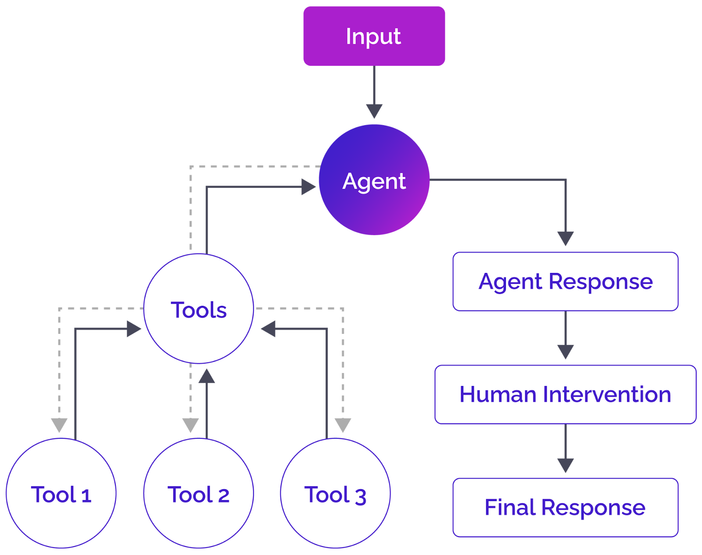
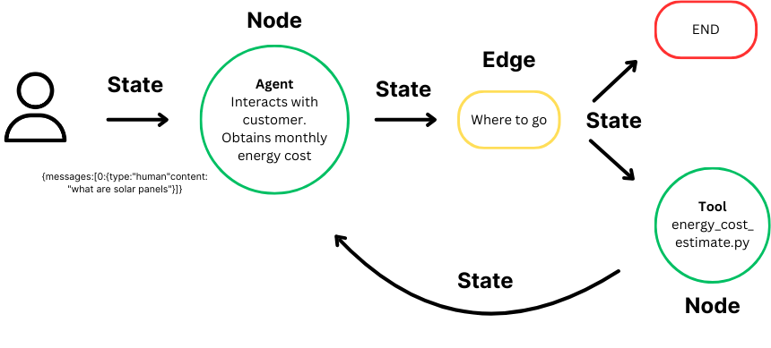
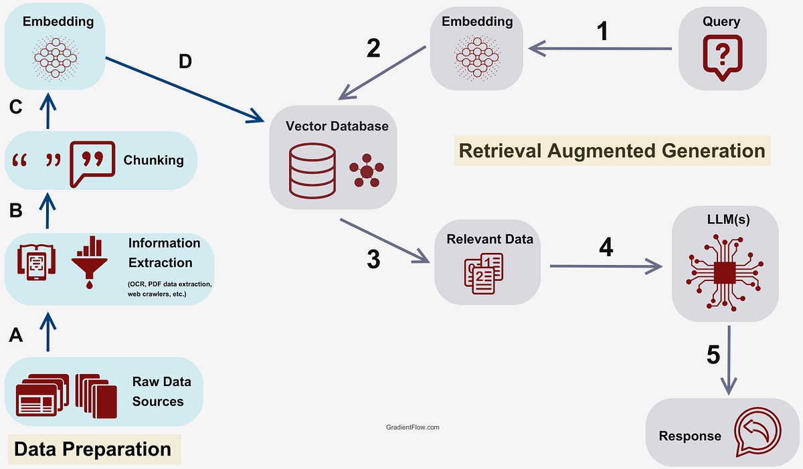

AI Development
10/07/2025•8 min read
Building Intelligent RAG Systems with LangChain
Learn how to create powerful document-aware AI assistants using Retrieval-Augmented Generation techniques.
Read More
I'm an Agentic AI Developer and Data Scientist with over 6 years of experience delivering high-impact solutions in machine learning, predictive modeling, NLP, and AI-driven automation.
I've successfully completed 100+ global projects spanning industries such as healthcare, e-commerce, and finance. I specialize in building intelligent applications using Python, LangChain, LangGraph, OpenAI SDK, and TensorFlow.
My expertise includes designing document-aware chatbots, AI onboarding assistants, and integrating AI into business workflows to streamline operations and optimize performance.
In AI/ML and Data Science
100+ successful projects
LangChain, OpenAI, Pinecone
Clients across multiple industries
Building intelligent solutions and driving business growth through AI and data science
Innovative AI solutions that demonstrate my expertise in machine learning, NLP, and intelligent automation
Agentic travel planner using LangGraph & FastAPI that generates complete trip plans based on user preferences including budget, travel mode, and destinations.
AI-powered document Q&A system enabling natural language interaction with multiple PDFs using LangChain, Google Gemini AI, and FAISS.
Intelligent e-commerce customer support agent with semantic search, dynamic query handling, and brand-aligned responses.
Real-time sentiment analysis on Twitter data with stock price prediction using NLP and time-series forecasting models.
Comprehensive technical expertise across the AI and data science spectrum
Building intelligent chatbots and virtual assistants
Retrieval-Augmented Generation for document Q&A
Streamlining business processes with AI workflows
Continuous learning and professional development in AI, technology, and engineering
Specialized in automotive systems design and development with a focus on smart car design and hybrid driveline efficiency.
PIAIC
Feb 2023 – Jun 2024
Comprehensive training in cloud-native technologies and generative AI models with focus on real-world applications.
Extreme Commerce
Jan 2022 – Jul 2022
Specialized training in private label business strategies, product research, sourcing, and brand building.
Extreme Commerce
Jan 2022 – Mar 2022
Focused on wholesale business models, supplier negotiations, and inventory management.
PIAIC
Jan 2019 – Jan 2021
In-depth study of machine learning, data science, and AI methodologies with practical project implementation.
IBM
Proficiency in data analysis techniques using Python, including data manipulation and visualization.
Stanford Online
Deep understanding of machine learning principles, algorithms, and implementation through Python.
DeepLearning.AI
Fundamentals of AI and its applications, focusing on business and societal impact.
Microsoft Technology Associate
Foundational skills in Python programming, including syntax, control flow, and OOP concepts.
Download my comprehensive CV to learn more about my professional journey and technical expertise
PIAIC, DeepLearning.AI, IBM, and Microsoft certifications
Built RAG apps, chatbots, and AI assistants
Led automation and optimization initiatives
AI Developer & Data Science Consultant
Insights, tutorials, and thoughts on AI development, machine learning, and the future of technology
Learn how to create powerful document-aware AI assistants using Retrieval-Augmented Generation techniques.
Read MoreExploring how autonomous AI agents are transforming business workflows and operational efficiency.
Read More
Deep dive into LangGraph's capabilities for building complex, stateful AI applications.
Read MoreEducational content on AI development, machine learning tutorials, and hands-on coding sessions

Complete tutorial on creating autonomous AI agents using LangGraph framework

Deep dive into Retrieval-Augmented Generation and its practical applications

Step-by-step guide to building intelligent chatbots with Python and OpenAI
Ready to collaborate on your next AI project? Let's discuss how we can bring your ideas to life